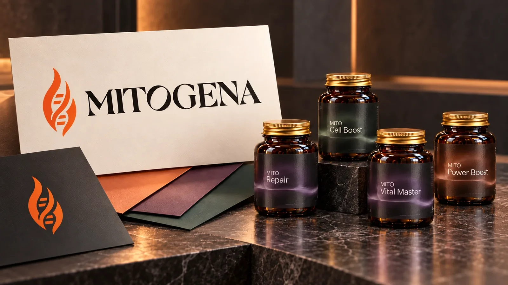

Portfolio
Design v praxi.
Od značky po detail.
Od kulturních akcí po zdravotnictví. Prohlédni si, jak převádím charakter značek do identity, kampaní, tiskovin a digitálu. U každého projektu najdeš konkrétní rozsah práce.
Projekty

Young Lions 2026
Dlouhodobá spolupráce s kreativní soutěží.

LekIQ
Vizuální komunikace LekIQ od obalů a merche po společné materiály s Vicks.

Česká lékárnická komora
Materiály pro každodenní komunikaci České lékárnické komory: publikace, pracovní tiskoviny, vizitky a sociální sítě.

Therrapia
Web a navazující grafika pro psychoterapeutickou praxi.

Divadlo PONEC
Vizuální komunikace tanečního divadla: plakáty k zahájení sezony, nabídka lekcí a grafika pro sociální sítě.

Czech Dance Platform
Vizuální identita festivalu v praxi: plakáty, program, výzva Open Call na sociálních sítích, taška a šňůrka na krk.

Kemp Starý Sad
Logo, vizuální styl a Instagram kempu

Klaudia Zdraví
Osobní značka pro videocasty

Mitogena
Logo, barevná paleta a etikety řady MITO
Drip It
Vánoční dárkové balení drip kávy

Viadukt Karlín
Vizuální identita kulturního centra

PharmaPort
Kompletní branding pracovního portálu

Bohempia
Kampaň pro barefoot boty vč. focení

Festival Povaleč
Plakátová kampaň

LabePharm
Rebranding výrobce doplňků stravy

Améliora
Branding kosmetického salónu

Ecoffee
Branding ekologické kavárny

Den úsměvů
Kampaň k mezinárodnímu dni

Sisters Conspiracy
Kampaň pro módní značku

FITS
Branding fitness startupu

MFKH 2022
Plakát hudebního festivalu

EasyCast
Vizuál pro YouTube kanál
Co spolu vytvoříme pro tvoji značku?
Napiš, co chystáš a s čím potřebuješ pomoct. Společně vybereme smysluplný rozsah a domluvíme další krok.
Poptat spolupráci